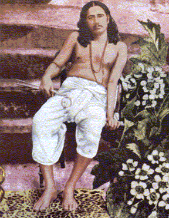
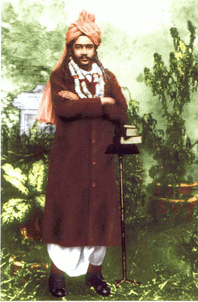

|
Paramahansa Shri Shri Nigamananda Saraswati Deva was born to a virtuous bramhin couple at Qutabpur in Nadia district (now in Bangladesh) in the year 1879. His father Bhuban Mohan Bhattacharya and mother Yogendra Mohini had named him 'Nalinikanta'. As he grew to boyhood, Nalinikanta drew admiration of the people for his extraordinary fearlessness, intelligence and forthrightness. Leadership was natural to him. Nalinikanta was especially dear to his mother.
As the fate would have it the mother of Nalinikanta breathed her last immaturely from a brief illness. At that time, Nalinikanta was pursuing his primary education in his maternal uncle's village
Radhakantapur. Her death deeply shocked Nalinikanta as he was very much devoted to his mother. He came to know that just before she breathed her last, his mother had handed over his charges to the
'Jaganmata' the 'Cosmic Mother'. He took the words of her mother to be literally true. As he was desperately in need of a mother, he single-heartedly prayed to the 'Jaganmata' to appear before him.
But alas! He failed to get a glimpse of 'Her' even in his dreams. He lost faith in God thinking that God does not exist, the religious rites and spiritual practices are worthless activities, and all those sadhus, ascetics or renunciates are lazy worthless cheats. His belief in God was shaken to such extent that he turned extremely antagonistic towards everything related to Him.
Especially, the sadhus and the wandering ascetics used to face most of his ire. He convinced to himself that 'death' is the 'end' of everything in one's life. Thereafter he decided for himself that - religion to him would be nothing other than 'doing good to the fellow beings', and his duty is to lead a disciplined and virtuous life.
During his school days Nalinikanta used to read textbooks that the 'Sun' is a gigantic ball of burning gases and the 'Moon' and the other planets are composed of gross matters such as dust and rocks. He used to feel a pinch in his heart when his fellow countrymen were jeered at as superstitious folks paying obeisance to these insentient planets. Even though he had lost faith in God and religion, he used to wonder how all those ancient Rishis (seers) of his land could go wrong in putting such significance on these heavenly bodies. Later, during his sadhak (spiritual practitioner) life, he was delighted to find that thousand of years before Newton, the ancient Rishis of India knew the science of space and the principles of gravitation. His heart was urging him to spread the knowledge and ideals of those ancient Rishis among his fellow beings.
The death of Yogendramohini Devi created a void in the Bhattacharya household. Nalinikanta being the eldest son in the family had to be married soon to bring a daughter-in-law for the proper management of the household. Hence, at the early age of seventeen, Nalinikanta was married to an extremely beautiful and intelligent girl named Sudhansubala Devi.
Nalinikanta went to study at the Dhaka School of Survey and thereafter took up jobs at various places to earn his livelihood. His independent spirit and forthright attitude was forcing him to frequently change his jobs.
Once, while serving as the supervisor of the Narayanapur estate
(Zamindari) Nalinikanta was working late in the night. He suddenly saw the shadowy image of Sudhansubala Devi standing at the table, sullen and silent. Sudhansubala Devi was supposed to be away at
Qutabpur at that time and was not expected to be present at
Narayanpur at all. The image appeared there for a few moments only. Nalinikanta felt disturbed and rushed to his village
Qutabpur. He came to know that Sudhansubala Devi had expired just an hour before he saw her image at
Narayanapur. Since childhood Nalinikanta had a thoughtful disposition. This incidence drew him further inwards. Soon after, he happened to see the shadowy image of Sudhansubala Devi several times in quick succession.
Nalinikanta had thought that death is the ultimate end of an individual. But, now he couldn't wish away the fact that it is not. By now, he was convinced that there must be 'life' after 'death'. He solemnly resolved to get back his beloved wife at any cost. Never before in the history of mankind any bereaved husband had made such a resolution, being so much oblivious of the impossibility of his success.
Nakinikanta became desperate to know all about the subtle phenomena of life and death. Thoughts such as - "What's death? How can I win over death? If death can come inevitably at any time in one's life why am I wasting my time without exploring the secrets of it?" - began to worry him all the time. This inquest took him to the Theosophical Society at
Adyar, in Chennai, India. He learnt all the theories and practices that Theosophy could offer and was able to talk to Sudhansu Devi through a medium. But, Nalinikanta could not see her physically. He was not satisfied with the experience at all. Through a discussion with the members of the Society he came to know that the knowledge about the phenomena of 'life and death' was the prerogative of the Hindu Yogis. He spared no time in looking for a true Yogi or
Sadhu who could fulfill his desire to meet his dead wife as well as bring contentment to his seeking mind.

While searching for a true yogi, Nalinikanta came across Swami Purnananda, a highly educated renunciate. The Swami explained to him that all female beings are merely a partial manifestation of the
'Mahamaya' or the 'Cosmic Mother'. Hence, it was extremely unwise and ridiculous on his part to run after an insignificant part (his wife) ignoring the whole (the Cosmic Mother). If he could get
Mahamaya, he would automatically get his wife and there were sure ways to get Her. Swami Purnananda advised him to look for a
'Sadguru'. Nalinikanta returned to his place of service a changed man. The belief in 'life after death' and 'soul' had turned him into a believer. He was desperately praying God for a chance to meet his destined
Sadguru.
One night Nalinikanta saw one Sadhu with a brilliant aura around him in his dream. He woke up to find the
Sadhu standing beside his bed in 'reality'. The Sadhu handed out to him a leaf bearing a mantra on it and then disappeared. Nalinikanta was spellbound by the incident. He did not know what to do with the mantra. No
Sadhu or spiritual teacher, whom he consulted, could decipher the mantra nor could they give him any guidance about what to do with it. At this point of time a crestfallen Nalinikanta received directions in his dream to go to the greatest
tantrik guru of that time - Bamakshepa, at the 'Tarapitha' of Birbhum, in West Bengal. Bama was extremely pleased to see the unique
'veeja mantra' (root/source mantra) of Goddess Tara which Nalinikanta had received in his dream, and readily accepted him as his disciple. Within a short span of one month, Nalinikanta was able to master the secrets of the
Tantrik ways (Tantra Sadhana) of attaining spiritual success. As a mark of perfection of his
sadhana (spiritual practice), 'Tara' or 'Mahashakti' (the embodiment of cosmic energy) appeared before him in the form of Devi Sudhansubala and granted him the boon that he would be able to see her in that form whenever he would so wish.
But, Nalinikanta became discontent when he was unable to touch that form. Moreover, to his amazement Nalinikanta saw that a brilliant light used to emanate from his body and take the shape of Devi Sudhansubala. He was puzzled. He wanted to know "if
'Mahashakti' originated from him only, then who 'he' is."
Overpowered by a consuming desire to know his 'self', Nalinikanta sought guru Bamakshepa's advice. The latter advised him to attain the knowledge of
'Advaita' from a Vedantic guru. He became a disciple of guru
Srimad Swami Satchidananda Saraswati at the holy place of 'Pushkar' in the state of Rajasthan, India. He instantly realized that Swami Satchidananda Saraswati was the
sadhu who gave him the 'Tara' mantra in his dream. The
swami initiated Nalinikanta into renunciation and according to the principle changed his name to 'Nigamananda', for he was able to comprehend the Vedic
(nigama) knowledge (Jnana) effortlessly.
During the 1907 Kumbha Mela at Allahabad, under the auspices of the then Shankaracharya of
Sringery Matha, the Jnaniguru of Nalinikanta Swami Satchidananda Deva conferred the title of
'paramahansa' on him in the presence of leading sadhus and renunciates. The uniqueness about Nigamananda's spiritual accomplishment was that he had explored and perfected
tantra, jnana, yoga and prema/bhav, all the four original ways envisaged in
Sanatana Dharma (ever new/eternal, and universal spiritual method based on Vedic knowledge) for the attainment of the highest spiritual goal.
Sadguru Swami Sri Sri Nigamananda Saraswati Deva wished every soul to rise to this exulted state of consciousness. Hence, he entered into society to wake up a spiritually inert people.

In the prevailing atmosphere of confusion in ideals and spirituality among his countrymen, he wanted them to rediscover the merits of sanatana dharma. He wrote five books -
Bramhacharya Sadhana, Yogiguru, Tantrikguru, Jnaniguru and Premikaguru - which are invaluable for any seeker on the path of spirituality. He edited and published a path breaking and reformist periodical 'Arya Darpana' (one of the earliest periodicals of India). It was widely received as a trend-setting journal on religion and spirituality.
With a view to establishing universal brotherhood he set before himself three objectives, namely, (i) propagation of
'sanatana dharma', (ii) dissemination of 'sat
siksha' (right type of education that enables development of integrated personality conducive for spiritual development), and (iii) service to all living beings deeming it as service rendered to the Supreme Being. In his opinion a person having attained 'self knowledge' is the right one to serve mankind in the right manner.
He enjoined upon His devotees - to walk together on the path of spirituality forming
Sanghas (spiritual associations), to lead Adarsha Grihastha Jeevan (life of an ideal householder), and to have
Bhava Binimaya (commune with each other for mutual exchange of spiritual ideas and experiences), which would enable them to achieve the above mentioned objectives and lead a fulfilled life.
He established the tradition of "Vakta Sammilani" (the annual congregation of devotees and spiritually minded people, for the close interaction between the two types of seekers - the household devotees and the renunciates. Till date, this congregation has been proved to be a spiritually beneficial experience for all.
There was a harmonious blending of highest enlightenment (jnana) and universal love
(vakti) in the person of Swamy Nigamananda. Rightly so, his ideological as well as methodological slogan was - "
Shankarer Mata" (the Vedantic doctrine of the 8th century spiritual
reformist Sri Sri Adi Shankaracharya that Bramha - the Supreme Soul and the individual soul is 'one' and the same, and it is the ultimate truth to be realized by men), and
"Gauranger Patha" (the path of devotion adopted by Sri Chaitanya Deva, the fourteenth century avatara of devotion, as the royal road to the spiritual destination i.e. God).
Thakura Sri Sri Nigamananda Deva left his corporal body and attained
'mahasamadhi' (eternal union with the Supreme Soul) through
yoga kriya (yogic techniques) on November 29, 1935 in Kolkata. But, his holy presence is still felt and his reassuring voice is still heard in the hour of need by those who have implicit faith in him, for the
'sadguru' is 'immortal'. Rightly, his followers deified Him as their revered and beloved
'thakura' and worshiped Him as their 'Guru' (the supreme preceptor) and 'Ishta' (the personal God) at the same time.
|